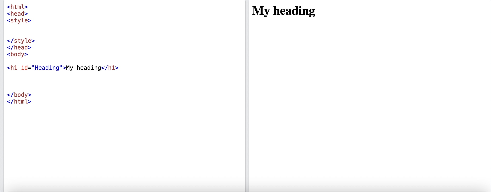

A simple CSS libary for beginners, made by Vinayak Nautiyal
CSS is a web development language which styles and changes HTML elements by element name, id, class etc. You can even make animations with CSS!
Different types of CSS include inline, internal and external. Inline means an element is styled and or edited by css using the style attribute in the opening tag, internal means the the elements are still styled and or edited on the same document but not in an attribute, instead css is applied in a special zone of the html document while external means css is applied to elements on a different document.
In inline css, CSS selectors are not needed, but in internal and external types of css, CSS selectors would be required to style and edit elements. For internal CSS, create a (style) tag in head or in body (do not put a style tag in something like divs, spans, paragraphs and headings (inside the tag will be where the css code goes).For external CSS create a new .css document in the same root directory of where the html document is located (a folder can be a root directory). Now add an id to a text element using the id attribute.  Then in the space allocated for CSS, type "#[id of element] {}".
Shift the {} brackets to different lines to create a space in the brackets consisting of multiple lines. Now in the {} brackets type "font-family:arial". After running the program,the text will look more mordern. This statement "font-family:arial" is called a CSS property. For inline CSS, you do not need to add an id. Instead, You just need add the "style=" attribute in the opening tag of a text element and type "font-family:arial;" in the quotation marks of the style= attribute. the font-family statement was still a property in inline CSS
NOTE: Don't forget to add a semicolon directly at the end of each CSS property statement, also property names and values are space and case sensitive. Please type CSS code in the correct space or a error may output. Calling a id,class etc. is case and space sensitive.
color:rgb(),hex code (eg:#00FF00) or try the html preset colors*
Sets the text color to the specified color
user-select:none;
Makes the text unselectable so no one can copy it
Some more fonts:
imapct,cursive
*For preset colors:In a text editor like sandbox, type the color property in a selector in the external css document and a list of colors will appear.
Add the background-color property to a text element "background-color:[color];". Now a background will appear around the text. Try applying the background-color property to the body element.
You can even make gradient backgrounds using "background-image:linear-gradient([angleofgradient]deg,stopone[usecolorvalue],stoptwo[
usecolorvalue],more stops if you want);